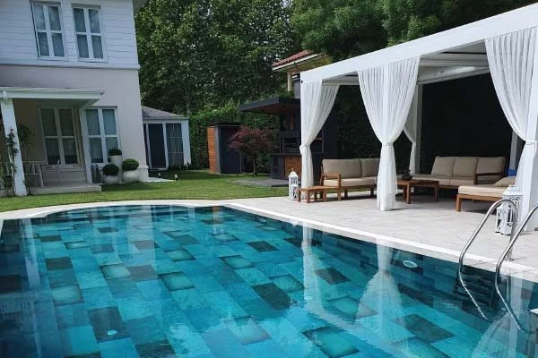
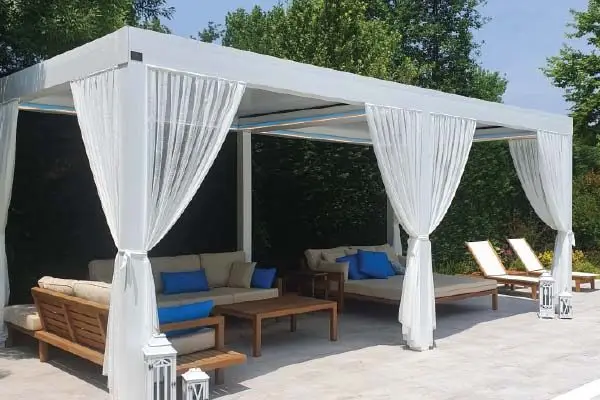
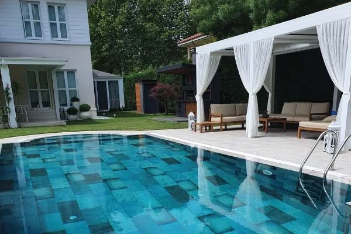
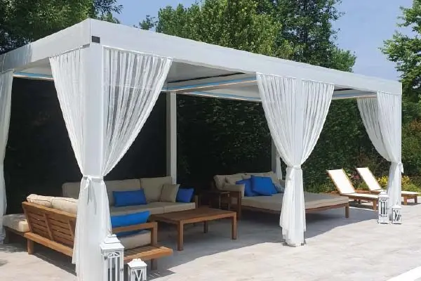

Modelo Insignia
Los Sistemas de Techo Corredizo Más Avanzados
Costa Glass se enorgullece de presentar su modelo insignia con la tecnología más avanzada entre los sistemas de techo corredizo. Los sistemas de techo BioClimatic y BioCompact de Costa Glass destacan por su mecanismo especial que les permite realizar movimientos tanto de plegado como de apertura, siendo únicos en el mundo con esta característica distintiva.
Estos sistemas de techo, diseñados para proporcionar confort durante las cuatro estaciones, representan la inversión más rentable gracias a su estructura duradera y versátil. Costa Glass se compromete a ofrecer soluciones innovadoras que permitan a nuestros clientes disfrutar de sus espacios exteriores con comodidad y elegancia durante todo el año.
 




 < alt="Instalación de Pérgolas Bioclimáticas en Torremolinos por CostaGlass" style="width: 100%; height: auto; display: block;" loading="lazy">
< alt="Instalación de Pérgolas Bioclimáticas en Torremolinos por CostaGlass" style="width: 100%; height: auto; display: block;" loading="lazy">